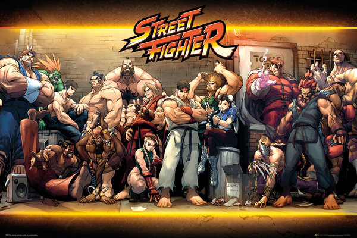

STREET FIGHTER HUB
Street Fighter és una llegendària franquícia de videojocs de lluita creada per Capcom l'any 1987, que va revolucionar el gènere amb l'arribada de Street Fighter II el 1991. La sèrie es basa en combats un contra un on els jugadors trien personatges amb estils de lluita únics i moviments especials icònics com l'"Hadouken" de Ryu i Ken. Al llarg dels anys, ha evolucionat amb mecàniques avançades com combos, súper moviments i estratègies de defensa, mantenint sempre la seva essència competitiva. Entre els seus personatges més famosos es troben Chun-Li, Guile, Dhalsim, Blanka i el vilà M. Bison, cadascun amb històries i habilitats distintives que han marcat generacions de jugadors.
La saga ha tingut múltiples seqüeles i spin-offs, destacant Street Fighter Alpha, Street Fighter III, Street Fighter IV i els més recents Street Fighter V i Street Fighter 6, cadascun amb innovacions en jugabilitat i gràfics. El seu impacte en la cultura popular ha transcendit els videojocs, influenciant pel·lícules, còmics, sèries animades i convertint-se en un pilar dels eSports amb tornejos de renom com l'EVO Championship Series. Amb una comunitat activa i una evolució constant, Street Fighter continua sent un dels jocs de lluita més icònics i respectats de la història dels videojocs.
A més del seu èxit en el món dels videojocs, Street Fighter ha deixat una empremta en la cultura popular gràcies a les seves adaptacions a altres mitjans. Ha inspirat pel·lícules d'acció en viu com Street Fighter: The Movie (1994), així com diverses sèries animades i còmics que han expandit la seva història i l'univers dels personatges. La seva influència també es veu reflectida en referències en altres jocs, sèries de televisió i fins i tot en competicions d'arts marcials reals. Amb més de tres dècades d'història, la franquícia continua innovant i captivant noves generacions de jugadors, consolidant-se com un dels pilars fonamentals del gènere de lluita.
{kind=link}